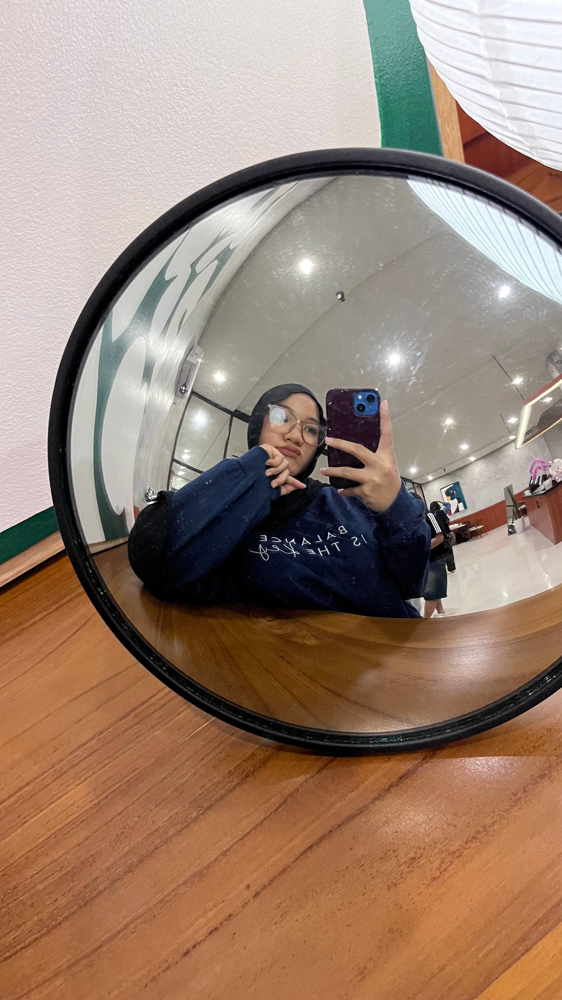

Get to know me

Tentangku
Aku mahasiswa semester 4 yang sekarang sedang menempuh pendidikan di Universitas Lampung
Jurusanku Ilmu Komputer, dan program studiku Sistem Informasi. Aku sejujurnya senang mempelajari coding dan berbagai macam rangkaiannya. Tapi kadang bikin pusing makanya aku sekarang suka main Mobile Legends.
Aku bukan berasal dari Lampung, tapi dari Palembang. Tepatnya di kota Prabumulih. Biasa disebut sih, kota nanas. Aku lahir pada tanggal 02 Februari 2006. Yang di mana berarti sekarang aku berumur 20 tahun :D.
Gimana ini semua dimulai?
Aku suka lihat papa mengotak-atik komputer, lama kelamaan aku penasaran. Dan yap, aku jadi suka pegang alat elektronik apalagi ngebongkarnya.
Pada saat pandemi Covid-19, hp aku rusak [sedih] tapi untungnya aku punya laptop. Berakhir dengan aku ngga punya HP selama setahun dan yang aku mainin cuma laptop.
Keputusanku untuk masuk SMK jurusan TKJ sebenarnya konyol, dan sangat lucu kalau dipikir. Aku mau belajar coding karena.. Aku mau retas WiFi supaya bisa internetan gratis T-T
Salah satu keputusan yang menurutku krusial buatku. Aku mengikuti SNBT dan memilih Sistem Informasi di pilihan pertama dan kedua. Kenapa? Karena aku berniat menyelesaikan studi tentang coding dengan lebih serius.